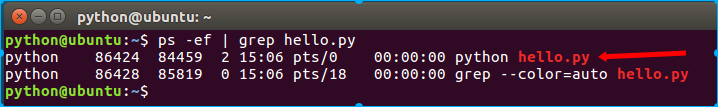
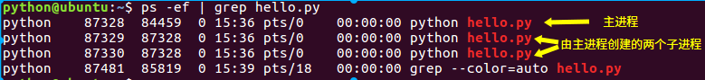

2.3 httpserver
上一节我们说在tornado.web.Application.listen()（示例代码中的app.listen(8000)）的方法中，创建了一个http服务器示例并绑定到给定端口，我们能不能自己动手来实现这一部分功能呢？
现在我们修改上一示例代码如下：
# coding:utf-8
import tornado.web
import tornado.ioloop
import tornado.httpserver # 新引入httpserver模块
class IndexHandler(tornado.web.RequestHandler):
"""主路由处理类"""
def get(self):
"""对应http的get请求方式"""
self.write("Hello Itcast!")
if __name__ == "__main__":
app = tornado.web.Application([
(r"/", IndexHandler),
])
# ------------------------------
# 我们修改这个部分
# app.listen(8000)
http_server = tornado.httpserver.HTTPServer(app)
http_server.listen(8000)
# ------------------------------
tornado.ioloop.IOLoop.current().start()
在这一修改版本中，我们引入了tornado.httpserver模块，顾名思义，它就是tornado的HTTP服务器实现。
我们创建了一个HTTP服务器实例http_server，因为服务器要服务于我们刚刚建立的web应用，将接收到的客户端请求通过web应用中的路由映射表引导到对应的handler中，所以在构建http_server对象的时候需要传出web应用对象app。http_server.listen(8000)将服务器绑定到8000端口。
实际上一版代码中app.listen(8000)正是对这一过程的简写。
单进程与多进程
我们刚刚实现的都是单进程，可以通过命令来查看：
$ ps -ef | grep hello.py

我们也可以一次启动多个进程，修改上面的代码如下：
# coding:utf-8
import tornado.web
import tornado.ioloop
import tornado.httpserver
class IndexHandler(tornado.web.RequestHandler):
"""主路由处理类"""
def get(self):
"""对应http的get请求方式"""
self.write("Hello Itcast!")
if __name__ == "__main__":
app = tornado.web.Application([
(r"/", IndexHandler),
])
http_server = tornado.httpserver.HTTPServer(app)
# -----------修改----------------
http_server.bind(8000)
http_server.start(0)
# ------------------------------
tornado.ioloop.IOLoop.current().start()
http_server.bind(port)方法是将服务器绑定到指定端口。
http_server.start(num_processes=1)方法指定开启几个进程，参数num_processes默认值为1，即默认仅开启一个进程；如果num_processes为None或者<=0，则自动根据机器硬件的cpu核芯数创建同等数目的子进程；如果num_processes>0，则创建num_processes个子进程。
本例中，我们使用http_server.start(0)，而我的虚拟机设定cpu核数为2，演示结果： 
我们在前面写的http_server.listen(8000)实际上就等同于：
http_server.bind(8000)
http_server.start(1)
说明
1.关于app.listen()
app.listen()这个方法只能在单进程模式中使用。
对于app.listen()与手动创建HTTPServer实例
http_server = tornado.httpserver.HTTPServer(app)
http_server.listen(8000)
这两种方式，建议大家先使用后者即创建HTTPServer实例的方式，因为其对于理解tornado web应用工作流程的完整性有帮助，便于大家记忆tornado开发的模块组成和程序结构；在熟练使用后，可以改为简写。
2.关于多进程
虽然tornado给我们提供了一次开启多个进程的方法，但是由于：
- 每个子进程都会从父进程中复制一份IOLoop实例，如过在创建子进程前我们的代码动了IOLoop实例，那么会影响到每一个子进程，势必会干扰到子进程IOLoop的工作；
- 所有进程是由一个命令一次开启的，也就无法做到在不停服务的情况下更新代码；
- 所有进程共享同一个端口，想要分别单独监控每一个进程就很困难。
不建议使用这种多进程的方式，而是手动开启多个进程，并且绑定不同的端口。